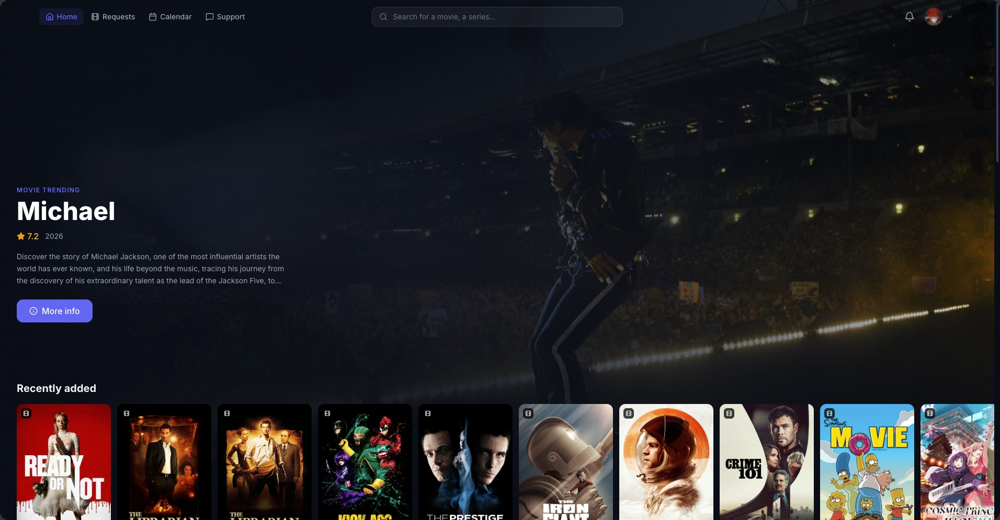
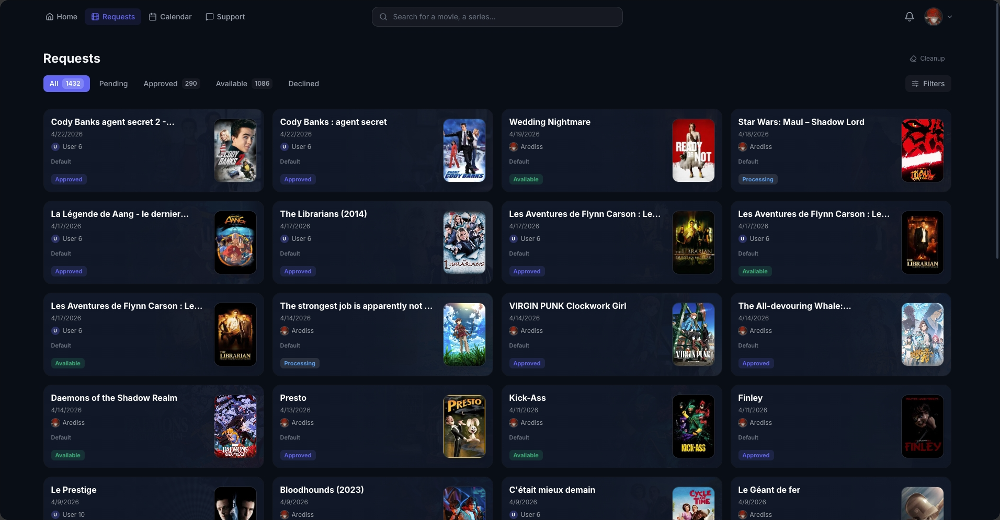
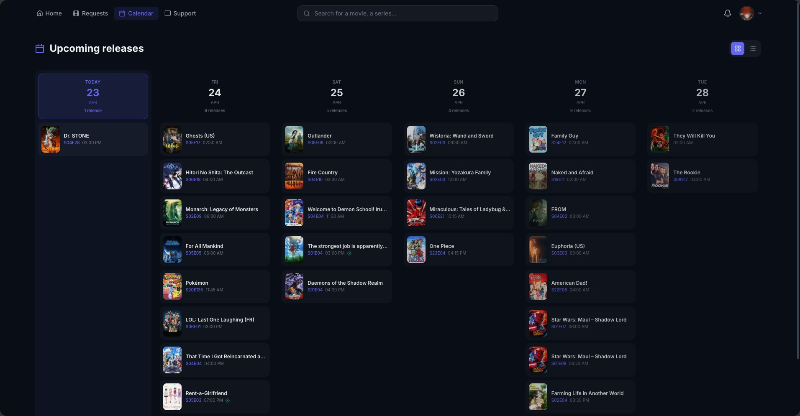
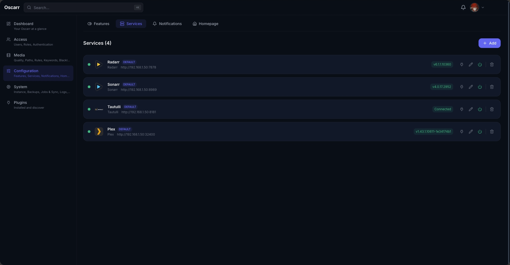
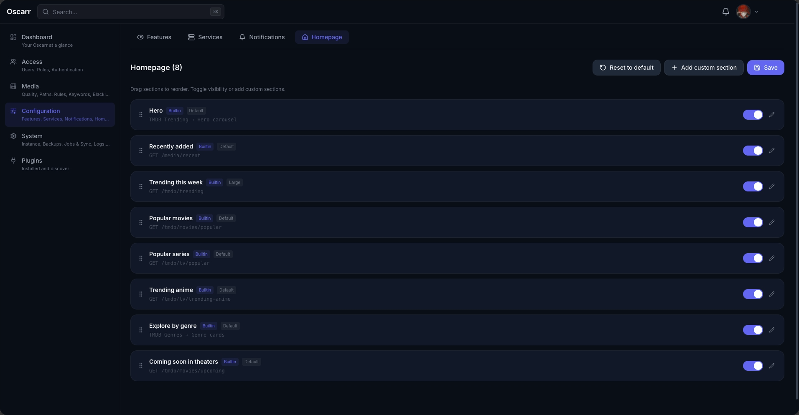
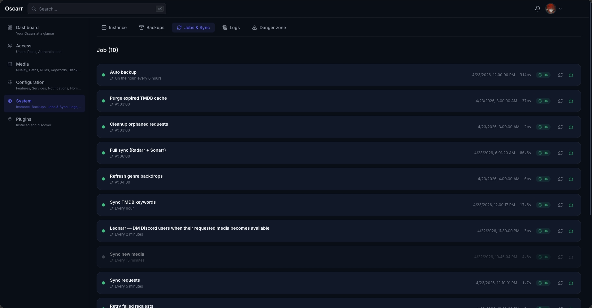
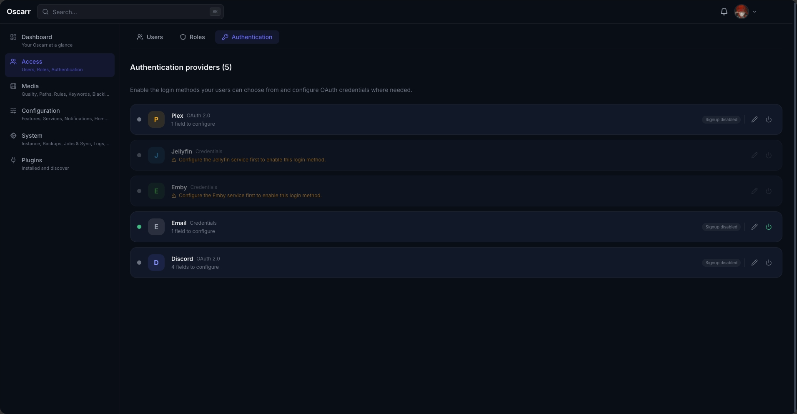
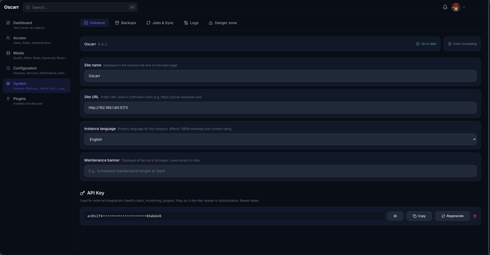

Radarr and Sonarr are the source of truth. Oscarr syncs directly with your *arr instances — what's available, what's downloading, what's requested — and wraps it in an interface your family will actually use.

There are great tools for managing media requests. Oscarr offers a different vision of what this kind of tool can be — one where your *arr stack is the source of truth, and your media server is just one of many rooms it opens.
Connect as many Radarr and Sonarr instances as you need. Priority-based folder routing figures out where each request belongs by genre, language, country, role.
Your users choose between SD, HD, 4K, or 4K HDR when requesting. Each quality maps to the right profile per service — nothing lands in the wrong folder.
Backend routes, frontend pages, scheduled jobs, notification channels, UI contributions — all from a simple manifest. Build what you need without forking.
Don't need the calendar? Turn it off. Support tickets? Toggle it. Every feature is a switch in the admin panel — composable in real time.
Plex, Discord, Jellyfin, Emby, or plain email — enable any combination. Users sign in with what they already have; none of it is required, all of it is optional.
Modern stack, dark by default, responsive, snappy. Built to feel like a product, not a homelab utility.
Click through the actual interface. No mocks, no placeholders — this is what the app looks like running on your machine.
Trending, popular, upcoming — pulled live from TMDB, stitched onto the current state of your library. Custom sections, drag-to-reorder, toggle on/off.
Every request lives in one place — pending, approved, downloading, available, declined. Filter, bulk-act, clean up orphans. Real-time status from Radarr and Sonarr.
Upcoming releases rolled up by day — episodes, premieres, movies. Your users check the calendar before bugging you in Discord.
Radarr, Sonarr, Plex, Tautulli — each with live health checks, version pinning, and test-connection in place. Add as many as you want.
Drag sections to reorder. Toggle visibility. Add custom sections powered by any TMDB endpoint, plugin, or saved filter.
Full syncs, TMDB cache, genre backdrops, orphan cleanup, retry failed requests, auto-backup — core jobs plus every job shipped by a plugin, each with its own CRON, last-run timing, and one-click manual trigger.
Plex, Discord, Jellyfin, Emby, or email credentials — flip on whichever your community uses. None is required; all are optional. Schema-driven config, masked secrets, per-provider signup control.
Site name, language, banner, API key. One-click backup of the SQLite database. Label-filtered logs, change log, danger zone.







Every non-core integration ships as a plugin. A folder, a manifest.json, an entry file — and it registers routes, pages, jobs, and UI contributions.
No build step. No database setup. Paste the command, open localhost:3456, run through the setup wizard.
Host networking so Oscarr can reach Radarr, Sonarr, Plex on your LAN. Data persists in oscarr-data.
Go to http://localhost:3456. Create your admin, enable the auth providers you want, connect your *arr services.
Configuration → Services → Add. URL + API key. Oscarr syncs the library state on its own.
Add -v ./plugins:/app/packages/plugins to drop in community plugins or your own.
Oscarr's ambition goes beyond media requests. The core is designed to be a unified dashboard for your entire homelab media stack — and plugins are how it gets there.
Authentication, UI shell, plugin engine, notification system. No hardcoded integrations that don't belong in every setup.
Each service integration is a self-contained plugin — routes, pages, jobs, settings. Add Jellyfin? Build a plugin, not a fork.
Every feature is toggleable. Every integration is optional. You compose the app that fits your stack.
A fast, polished interface your non-technical users actually enjoy. No config files, no terminal commands.
Open source. MIT-licensed. Built for the homelab crowd — by the homelab crowd. Star it, run it, break it, contribute back.